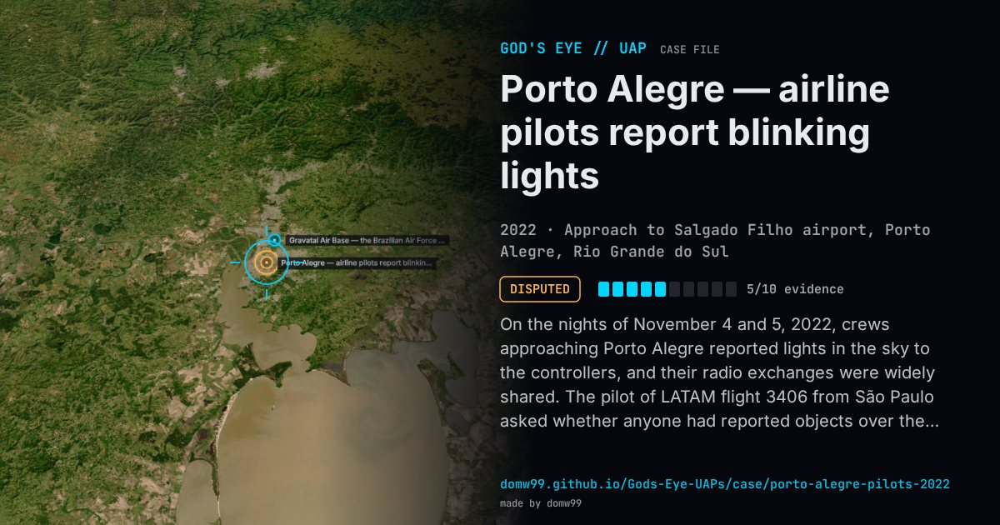

Porto Alegre — airline pilots report blinking lights

On the nights of November 4 and 5, 2022, crews approaching Porto Alegre reported lights in the sky to the controllers, and their radio exchanges were widely shared. The pilot of LATAM flight 3406 from São Paulo asked whether anyone had reported objects over the city and described lights that switched on and off, sometimes one and sometimes two or three; the pilot of Azul 4657 from Belo Horizonte said he had seen them since leaving Minas Gerais and that they were well above his 38,000 ft. The tower said it could see them too, apparently stationary, and that they would not affect approaches; similar reports came from over Santa Catarina in late October and from four aircraft on November 8. The Air Force said its radars detected no unknown object. Astronomers suggested Starlink satellites catching the sun, searchlights on cloud and, for some videos, meteors; none was confirmed for the pilots’ sightings.
Explanation
Astronomers proposed several ordinary causes: sunlight flashing off Starlink satellites (an analysis of a video from Torres pointed to Starlink “almost 100%”), searchlights reflected by cloud, and meteors in other recordings. The Brazilian Air Force said its radars detected nothing unknown, and no single cause was confirmed for the pilots’ reports.
What was seen
Shape: Lights switching on and off, one to three at a time, apparently stationary and higher than the aircraft
Witnesses: Crews of LATAM 3406, Azul 4657 and other flights; the Porto Alegre tower
Duration: Minutes, on several nights
Sources
- Canaltech — pilots observe mysterious lights in Porto Alegre
- Olhar Digital — UFOs in southern Brazil: what SpaceX may have to do with it
- Agência Brasil explains the mysterious lights seen in the sky
Browse
- Brazil
- 2020s
- Disputed
- Aviation encounters
- Many independent witnesses
- Pilot and aircrew witnesses
- Video footage
- Audio recordings or radio transcripts
- Lights and fireballs